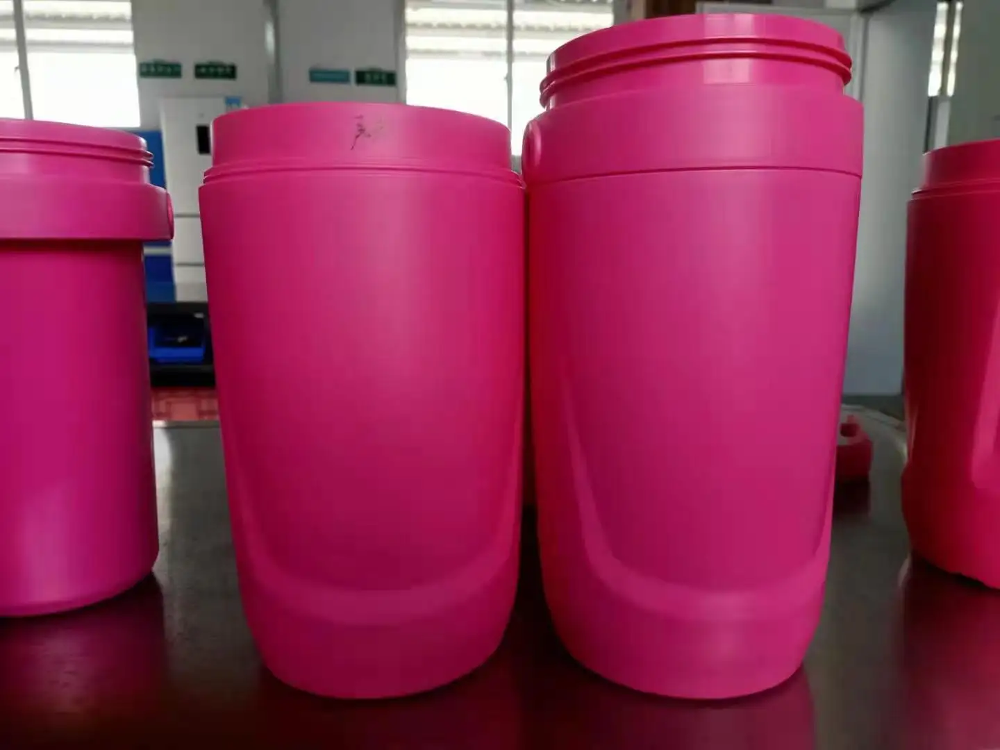

Products Layout Sample

Black Masterbatch
Layout preview with main masterbatch image on the left and plastic product samples on the right.

White Masterbatch
Layout preview with main masterbatch image and related plastic product samples.


Color Masterbatch
Layout preview with main masterbatch image and colorful plastic product samples.

Functional Masterbatch
Layout preview with main masterbatch image and functional plastic product samples.